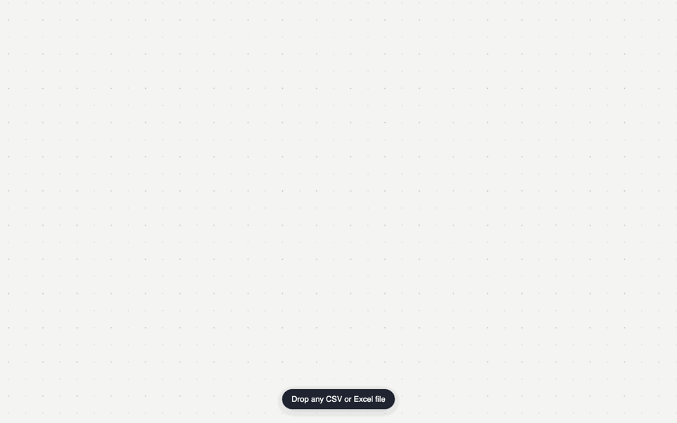

Orim is a self-hosted Miro alternative for government, finance, healthcare and defense — the teams whose security review says no to someone else's cloud.

"Your compliance team already said no to Miro."
Miro, Mural and FigJam are cloud-only at any price. So regulated teams either ban visual collaboration outright, or spend months on security reviews for a vendor who still holds their thinking. Orim removes the question: it runs entirely inside your perimeter.
One process serves everything. The only outbound connection Orim will ever make is to your own identity provider — and only if you configure one.
browser ── HTTPS/WSS (your proxy) ──► orim
├─ static web app
├─ HTTP API
│ (auth · boards · audit)
├─ WebSocket sync
│ (Yjs CRDT)
└─ SQLite
one file, /data
The controls your review checklist asks about are built in, not bolted on — and they're documented honestly, limitations included.
Authorization-code flow against Keycloak, Azure AD or Okta with
live JWKS signature verification. Set
ORIM_OIDC_REQUIRED=1 and every identity flows through
your IdP.
Sign-ins (and failures), board connections, share changes and every admin action — browsable in the admin console, queryable over HTTP, or ingested straight into your SIEM from SQLite.
Users, roles, and sessions at /admin: promote,
demote, sign a user out everywhere, and filter the audit trail —
with guardrails like "never zero admins" enforced server-side.
Every board keeps version snapshots — automatic and labelled. Time-travel is read-only, restores are ordinary synced edits, and the audit log records who rolled back, and to when.
Per-board access modes and roles are checked where the data moves: viewer connections are read-only server-side and private boards reject strangers — not hidden in the UI.
Same-origin CORS by default, per-IP rate limiting on auth endpoints, scrypt-hashed passwords, expiring sessions. The checklist is in SECURITY.md.
Section 508 / EN 301 549 is a legal gate incumbents fail. Every Orim board renders as a navigable ARIA tree a screen reader can actually read — a category first.
Orim's bet: the canvas is a document — a typed, structured graph that happens to have a spatial projection. Everything below falls out of that one decision.
CSV or Excel onto the canvas → a laid-out org chart, dependency graph, kanban or table. Then Tab adds children, Enter siblings — the tree rebalances itself.
Markdown, Mermaid, SVG, PNG and full JSON — driven by the same reading order a screen reader hears. The format is MIT-licensed with a published JSON Schema.
Put estimate: 5 on a sticky and it becomes a chip. Put stickies in a frame and it aggregates — sum, average, min, max — with zero configuration.
A built-in MCP server lets your on-prem LLM read boards, create structured objects and run layouts — an agent is a collaborator, not a sidebar chatbot.
Stickies can be live views of table cells: edit either side, both update. Or select a pile of stickies and synthesize a structured table from the clusters.
Dot voting with budgets, a shared timer, private drafting with a broadcast reveal — then present mode turns your frames into slides for the readout.
Point a table at a CSV URL — a published sheet, an internal export — behind your allow-list. Refreshes keep bindings and totals intact.
Drop a URL and get a live, resizable site you can scroll and click. Drop or paste images too — everything stays in the document.
Cloud whiteboards can't offer self-hosting without breaking their business model. Orim is built on it.
| Capability | Orim | Miro | Mural | FigJam |
|---|---|---|---|---|
| Self-hosting / on-prem | Yes | No | No | No |
| Runs air-gapped | Yes | No | No | No |
| Open, documented format | MIT + JSON Schema | No | No | No |
| Audit log on your infrastructure | Yes | No | No | No |
| Screen-reader navigable boards | Yes | No | No | No |
| Native MCP for agents | Yes | No | No | No |
| Works offline | Local-first | Limited | No | No |
| Version history on your infrastructure | Append-only | No | No | No |
| Pricing model | Per server | Per seat | Per seat | Per seat |
As of September 2026; based on each vendor's published offering.
Per-seat pricing taxes the one thing a whiteboard is for: inviting people in. So teams ration seats, and collaboration dies by spreadsheet. Orim is licensed per server, by seat band — flat, predictable, and procurement-shaped.
Indicative bands — smaller teams start around £10–20k/yr per 100 seats. Cloud figure based on published per-seat enterprise list pricing, September 2026.
One container, one port, one data volume. Upgrades are a pull; backups are a file.
# docker-compose.yml is in the repo $ docker compose up -d → http://localhost:1234 # optional: SSO through your IdP ORIM_OIDC_ISSUER=https://login.example.com/realms/main ORIM_OIDC_CLIENT_ID=orim ORIM_OIDC_REQUIRED=1
Full environment reference and reverse-proxy guidance in DEPLOY.md. Bring your own Postgres? You don't need one.
The GitLab playbook, applied honestly.
The board format, JSON Schema and all converters are MIT-licensed forever. Your data is portable by construction, not by promise.
Read every line your security review cares about. Enterprise features — SSO, audit log, admin console — are licensed per server.
Viewing boards, commenting, and exporting your own data are never behind a license. Leaving must always be free.